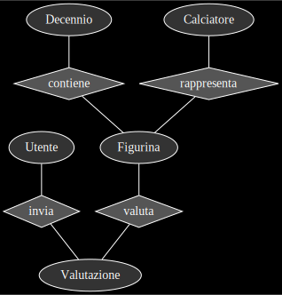
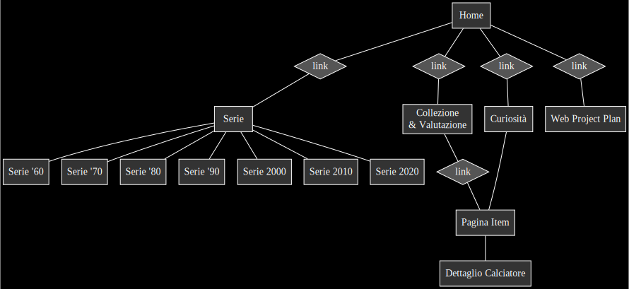
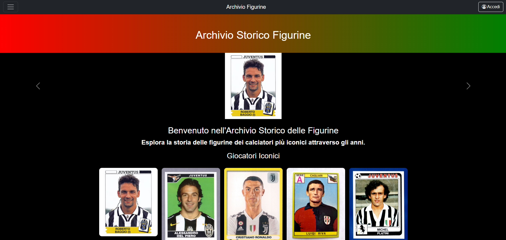
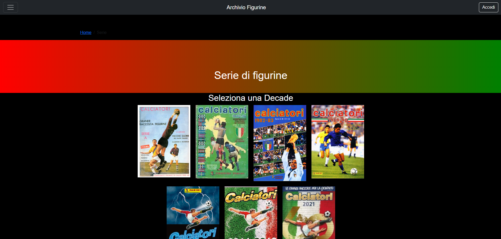
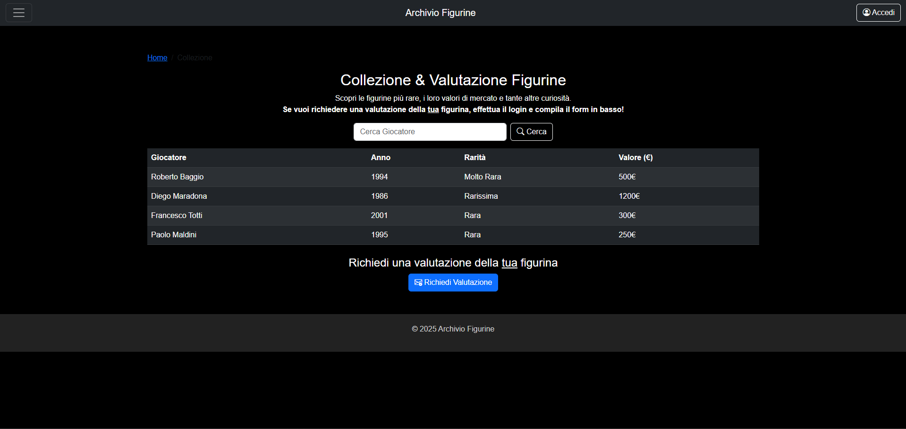
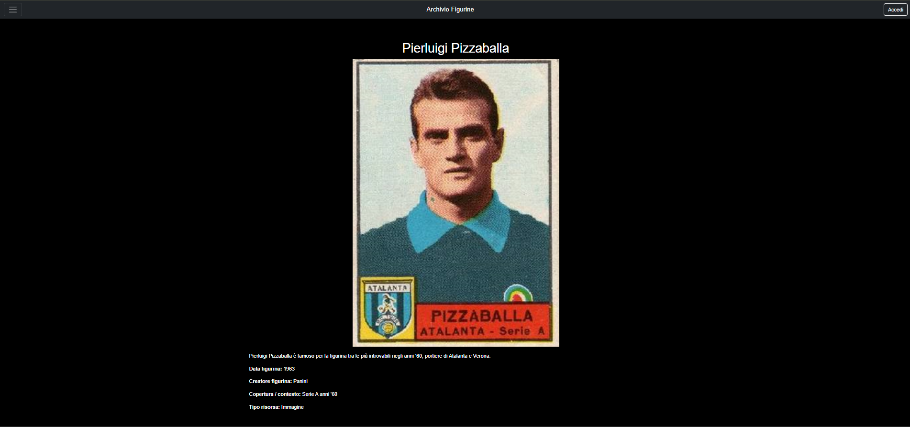

L’Idea (Introduzione)
Il progetto "Archivio Figurine" è un'iniziativa digitale che mira a raccogliere, catalogare e valorizzare le figurine storiche del calcio italiano, offrendo agli utenti un'esperienza interattiva e intuitiva. Il sito è progettato per fornire un archivio completo e dettagliato che permette di esplorare le figurine attraverso le diverse decadi, con schede descrittive, immagini ad alta risoluzione e approfondimenti storici.
L'obiettivo principale del progetto è creare una piattaforma accessibile sia ai collezionisti esperti che ai semplici appassionati di calcio, garantendo strumenti avanzati di navigazione, filtri di ricerca per decade, squadra e competizione, nonché funzionalità interattive come timeline storiche e mappe concettuali. Oltre alla conservazione del patrimonio sportivo, il sito offre anche una dimensione educativa, consentendo agli utenti di scoprire l'evoluzione delle figurine nel tempo e il loro impatto culturale.
La piattaforma è ottimizzata per garantire un'esperienza fluida su diversi dispositivi, rendendola facilmente consultabile sia da desktop che da mobile.
Brief
2.1 Obiettivi
Il sito ha due obbiettivi principali:
- Proporre un archivio storico e digitale che raccolga figurine di diverse epoche, rendendole fruibili al grande pubblico.
- Fornire un sistema di navigazione user-friendly e responsive, per coinvolgere sia collezionisti esperti che utenti nostalgici.
2.2 Pubblico
Il target comprende collezionisti accaniti di ogni età, e utenti casuali appassionati di calcio e desiderosi di rivedere vecchi ricordi. L'interfaccia è pensata per essere intuitiva e graficamente accattivante, così da attirare anche un pubblico giovane.
2.3 Accesso alla risorsa
Il design è multipiattaforma e completamente responsive, in modo da garantire fruizione sia su smartphone che su schermi desktop. È stato dato risalto a interfacce semplici, con menu chiari e tempi di caricamento ridotti.
2.4 Contenuti e dati
La base dati del progetto è una raccolta di figurine storiche, corredate da immagini, descrizioni, anno, rarità e note di contesto. Le risorse provengono in parte da siti come Panini, e da archivi di collezionisti privati. Alcuni contenuti, come le curiosità e le storie iconiche, sono originali (redatti appositamente).
Benchmark
Sono stati analizzati siti come “Figurine Forever”, “Museo Virtuale della Figurina” e il “Sito Ufficiale Panini” per comprendere quali servizi offrono e quali limiti presentano. In particolare:
Figurine Forever
Punti di forza: Recensioni approfondite delle collezioni, immagini dettagliate.
Limiti: Navigazione migliorabile, struttura confusa.
Museo Virtuale della Figurina
Punti di forza: Ampia panoramica storica, archivio di figurine.
Limiti: Design datato, scarsa usabilità.
Sito Ufficiale Panini
Punti di forza: Catalogo completo, vendita online, iniziative digitali.
Limiti: Struttura di navigazione non ottimale, poche sezioni dedicate alla storia.
Il nostro progetto si distingue per l’attenzione alla dimensione storica e collezionistica, e per l’adozione di un layout responsive e moderno, con sezioni di curiosità e funzionalità interattive che i competitor non sempre integrano appieno.
Struttura
4.1 Mappa concettuale
La mappa concettuale rappresenta la struttura e le connessioni tra le varie sezioni del sito.
La mappa concettuale a tabelle

4.2 Schema delle dipendenze
Le relazioni tra le pagine e le sezioni sono mostrate negli schemi sottostanti. La home collega direttamente alle sezioni principali (Serie, Collezione, Curiosità), ciascuna delle quali porta a ulteriori sottopagine di dettaglio.
4.3 Categorie
Le figurine (item) sono descritte tramite alcune etichette: nome giocatore, anno, squadra, rarità, descrizione, immagine ad alta risoluzione, e metadati Dublin Core (dc:title, dc:creator, dc:date, dc:description, ecc.).
Layout (Wireframes)
Di seguito sono presentati i wireframes delle pagine principali, che mostrano l’architettura base e la disposizione degli elementi:
Home page
Pagina Serie
Pagina Figurine
Pagina singolo item
Usabilità
Accessibilità e Navigazione: menù chiaro e responsive, breadcrumbs, barra di ricerca e suddivisione per decadi.
Compatibilità tra Dispositivi: layout responsive, test su browser diversi. Ottimizzazione di performance e caricamento immagini.
Ottimizzazione dell’Esperienza Utente: struttura visiva semplice, con feedback immediato sui pulsanti e descrizioni brevi.
Servizi
Funzionalità Implementate:
- Ricerca nella tabella di Collezione (filtra per nome giocatore).
- Navigazione per decadi (Serie).
- Breadcrumb (presente nelle pagine secondarie).
- Offcanvas menù con link alle principali sezioni.
- Tool integrativo di “Richiedi Valutazione Figurina” (tramite login fittizio).
- Tool che permette la visualizzazione della sede tramite i servizi google nella home.
Tecnologie Utilizzate:
HTML5, CSS3, Bootstrap, JavaScript (fittizio per il login e la valutazione).
Uso di metadati Dublin Core (sia in
Accessibilità e Supporto:
Contrasti visivi adeguati, test con screen reader su alcune pagine,
ottimizzazione per dispositivi mobili.
Bibliografia e Sitografia
Fonti utilizzate per il progetto: